Making AI grading tools instructors can trust and control.
I audited two of Pearson's AI assessment tools, then led the redesign that put the audit's findings into practice. The pattern I designed was adopted by a second product.
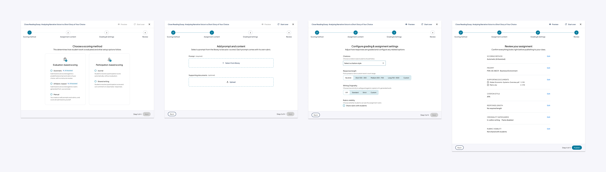
Generate is a suite of Pearson tools for assigning and grading authentic assessments in higher education. Authentic assessments are valued for their real-world relevance, but they take a lot of time to set up and grade. Generate's value proposition is that AI saves instructors that time, so they can use authentic assessments at scale.
In both products I worked on, Writing Solutions (typed writing) and Freehand Grader (handwritten, usually STEM work), instructors review and approve the AI's output. Despite strong features, instructors were hesitating, abandoning flows, and taking longer than expected on core tasks. That friction undermined the time savings the products promised.
I led the work in two stages. First, a two-week audit gave product, engineering, and design a shared diagnosis of what to fix first. Then I led the redesign of assignment creation in Writing Solutions, applying the audit's findings to one flow.
The audit found that instructors were being asked to make high-stakes AI decisions before the products gave them enough context to feel confident. I reviewed both products through three lenses, prioritizing the instructor experience over the student experience because it was more complex and carried more business impact.
- Jobs to be done. I mapped instructor and student jobs to find the gap between what the products were built to do and what users came to accomplish.
- UX teardown. I reviewed each screen for interaction patterns, information hierarchy, content organization, navigation, and visual design.
- Funnel data. I cross-checked findings against Pendo, Pearson's product analytics tool, to match each point of friction to where users dropped off.
Audit artifactsUsage data, jobs to be done, pain points, the annotated teardown, and core flow maps for both products
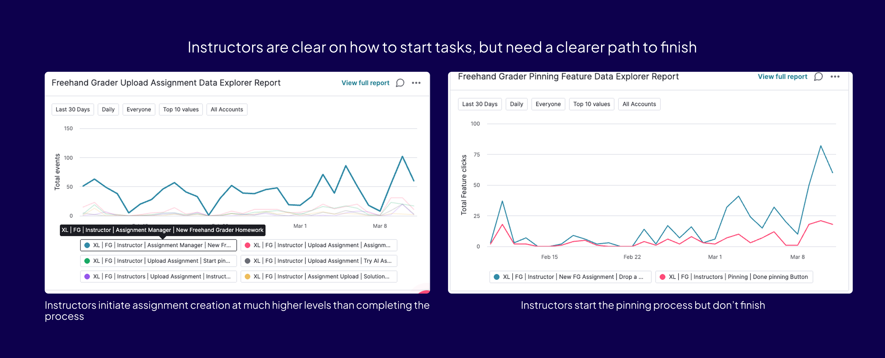
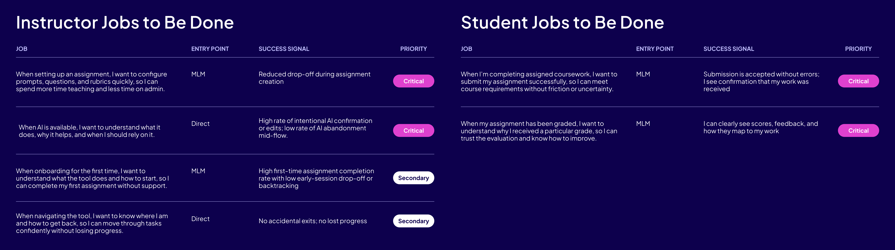
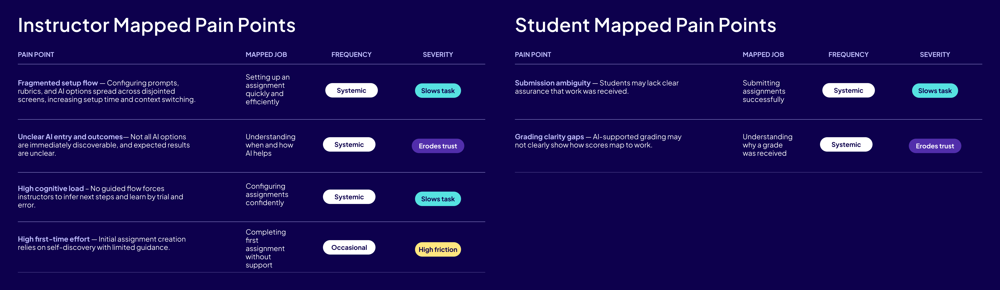
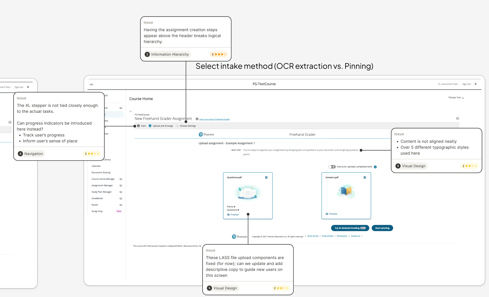
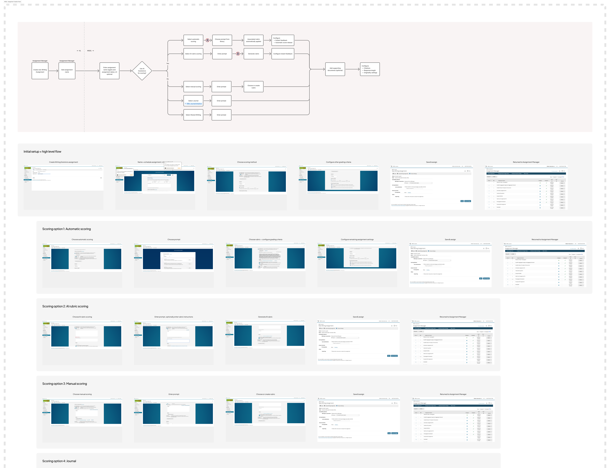
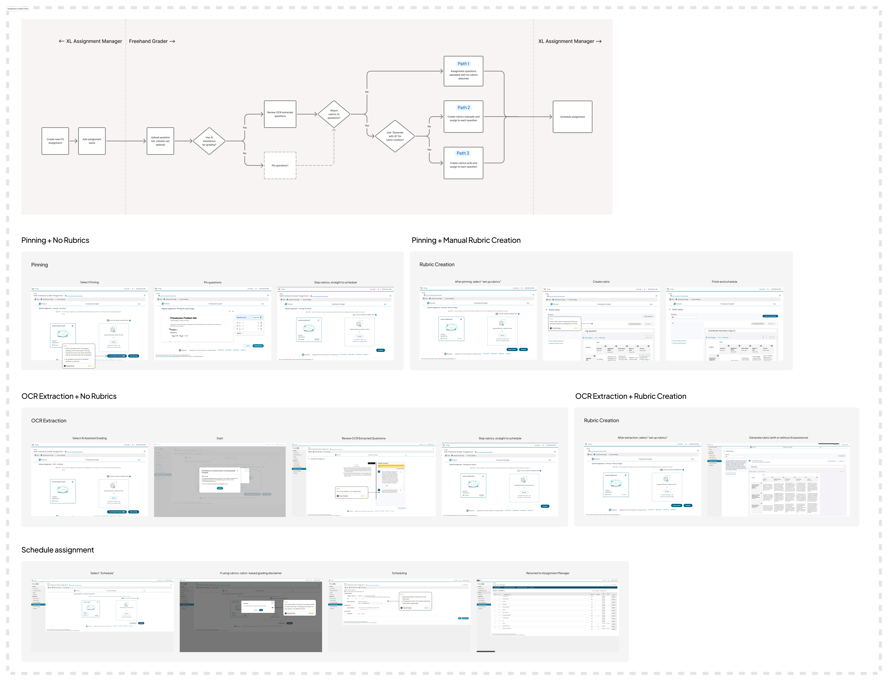
Four findings
-
01
AI was framed as a risky fork, not a helpful partner.
The products presented AI as a branching choice between an AI path and a non-AI path. That framing made AI feel irreversible and turned grading into a high-stakes setup decision. Instructors don't want to choose an AI workflow; they want to grade, with AI available where it helps.
-
02
Complexity came too early.
Multi-step, consequential flows lacked progress indicators, completion states, and safe ways to revise earlier choices. The funnel data showed the largest drop at exactly the point where users had to commit without a preview.
-
03
The structure followed backend systems, not instructor tasks.
Three backend services each displayed their own headers and containers inside a single task. Instructors think "I need to create an assignment," not in terms of systems.
-
04
Small inefficiencies added up.
Constrained space for editing, sparse in-context guidance, error messages without recovery steps, and visual inconsistencies each seemed minor. Together, they contradicted the products' promise of saving time.
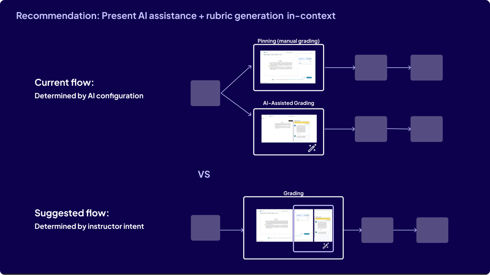
Business risksWhat the friction meant for adoption, support, trust, and revenue
- Adoption. Usage data showed instructors starting tasks but not completing them, which directly threatens adoption.
- Support burden. Sparse in-context guidance and unclear error states were likely driving unnecessary support requests.
- Eroded trust. Visual inconsistency and poor hierarchy weakened confidence in the products, especially for first-time users.
- Revenue. Inefficiency is especially damaging for products whose core value proposition is saving instructors time.
Every short-term recommendation became a concrete design change in the v1 redesigns of Writing Solutions and Freehand Grader. I presented the findings to product, engineering, and design leadership in March 2026, and the team referenced them in later roadmap planning.
| Recommendation | What it became in Writing Solutions |
|---|---|
| Task-level navigation aligned to instructor tasks, not backend services | A persistent four-step progress stepper |
| Visible progress, completion, and system state | A sticky footer showing the current step, with Back and Next |
| Clearer context for key decisions, with progressive disclosure instead of branching forks | A scoring method step that names the intent behind each choice and flags which options use AI |
| Removing legacy iFrames during platform modernization | Removing the nested scroll container from assignment creation |
The audit also made the case for a mobile experience. Between 82% and 85% of customers entered through a learning management system with no mobile support, yet key actions happened on mobile.
In Writing Solutions, I replaced the single long assignment creation page with four focused steps, so instructors make each decision with the context it needs.
The problem
The original page stacked every decision into one scroll. Some choices changed what later choices meant, so instructors scrolled back and forth constantly to revise. The structure conflicted with how instructors think, which is content first and grading later.
High-impact choices, like automatic versus instructor grading, had consequences the page never explained. Instructors ended up confused, redoing work, and publishing assignments that didn't behave as they intended.
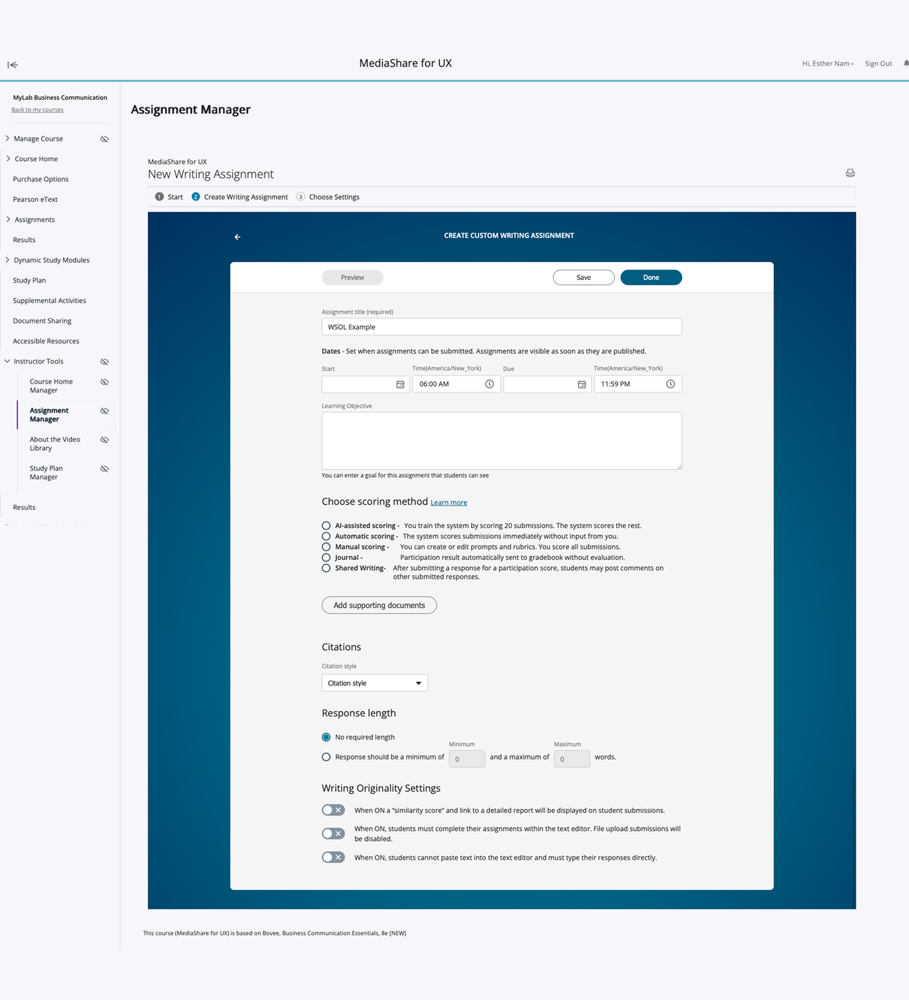
The constraint
In Writing Solutions, the scoring method determines whether prompts are system-defined or written by the instructor. So the scoring choice had to come first, and content creation had to follow within it. I designed the flow to show that constraint openly rather than hide it.
The four steps
Scoring method
Five flat radio buttons became two grouped cards, evaluation-based and participation-based, that name the instructor's intent before the method. Helper text sets expectations for later steps, and AI-assisted options are marked.
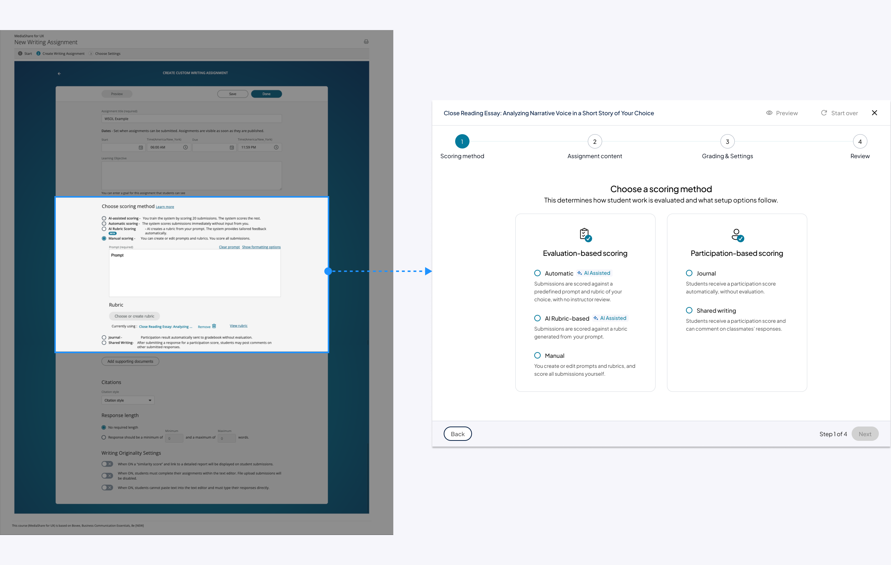
Assignment content
This step adapts to step 1: instructors pick a system prompt for AI-assisted scoring or write their own for instructor scoring. Supporting documents and an optional learning outcome are added here.
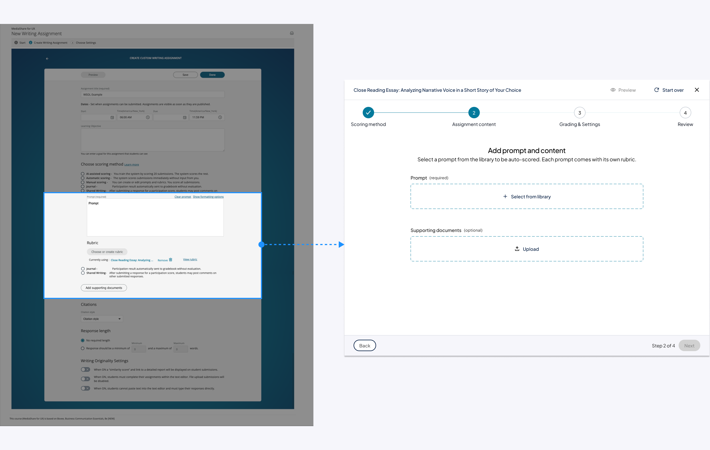
Grading settings
Rubric, response length, citations, originality, and feedback options moved from scattered places into one step, with presets.
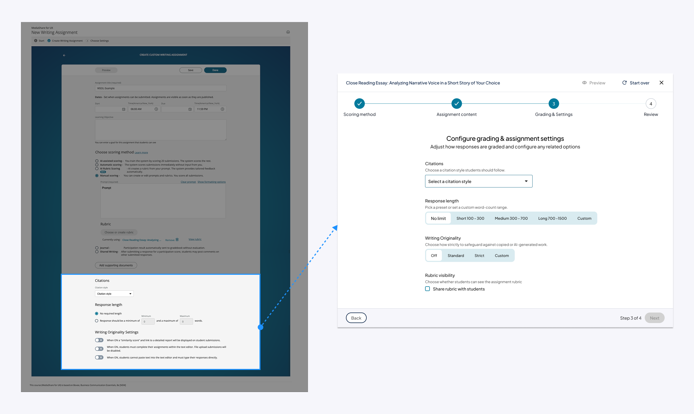
Review
This step is new. Instructors see every decision on one screen and can edit each one inline before publishing.
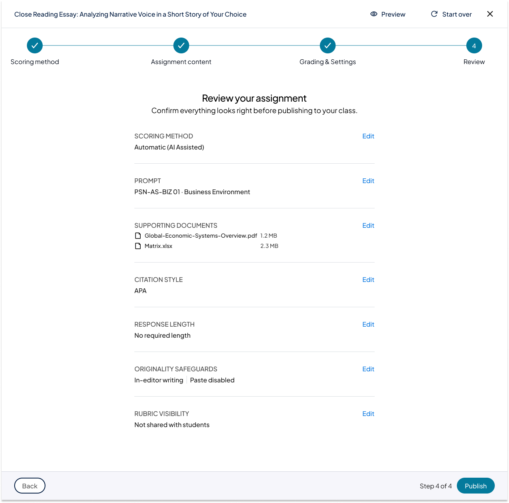
A persistent stepper and a sticky footer frame all four steps. The tradeoff is more clicks than a single page. In exchange, instructors no longer scroll back to revise earlier choices.
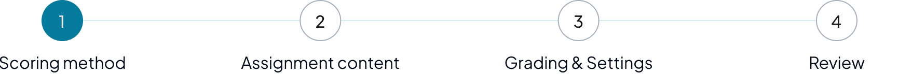
Two smaller design decisionsWhy the learning outcome stayed optional, and designing for an unreleased design system
The learning outcome stayed optional. Tying assignments to learning outcomes is good teaching practice, and Pearson's guidance supports it. But many instructors don't work that way day to day, and many courses define outcomes elsewhere, such as the syllabus or the learning management system. Requiring the field risked slowing authoring and reducing adoption, while removing it would weaken teaching alignment and limit later AI and analytics value. So I kept it optional within step 2.
Designed for where Nebula was heading. The visual treatment followed Nebula, Pearson's new design system, which hadn't been released yet. Since the department planned to update Nebula by the end of 2026, I designed against where it was heading, so the work would stay aligned after the update.
The constraint forced instructors to choose a scoring method, including whether to use AI, before defining what they were assigning. My research suggested instructors weren't ready to make that commitment so early.
Alongside the redesign, I ran three rounds of focus groups, each with about a dozen higher-ed instructors, on how they view AI in assignment creation. They suggested instructors don't yet trust AI enough to commit to it at the start of a flow. That echoed the audit's finding that AI felt like a risky fork.
The two goals pulled in opposite directions:
| Keep scoring first | Put the assignment objective first |
|---|---|
| Surfaces the AI path early, so instructors get its time savings sooner | Matches how instructors already think: content first, grading later |
| Time savings often decides whether an instructor assigns an authentic assessment at all | Asks for less trust in AI up front |
| Required by the current system constraint | Would need engineering work to loosen that constraint |
The findings didn't change this version, because the constraint was fixed for the near term. Instead, I made the AI choice as clear as the constraint allowed: naming each option's intent, marking which options used AI, and adding a review step before anything reached students. The findings were kept for future iterations and for the planned combination of Writing Solutions, Freehand Grader, and MediaShare into one product.
Freehand Grader's redesign adopted the same four-step pattern, with step names suited to its own flow, rather than inventing its own.
-
01
A shared pattern across products
The audit's task-level structure now runs through both tools, which supports the planned merge of Generate's products.
-
02
Less confusion in pilot testing
My PM found the redesigned flow less confusing than the original in his pilot testing.
Writing Solutions was still in beta when I left Pearson, so there is no usage data yet. After release, I would measure it in Pendo with three numbers: the share of instructors who start an assignment and publish it, the time from start to publish, and how often instructors edit an assignment after publishing.
The next question is whether earning instructors' trust in AI is worth the investment. I would explore ways to build that trust through transparency, previews, and more control. If that unlocks the time savings instructors care about, the work likely pays for itself. If not, the simpler answer may be to put the assignment objective first.
The audit's long-term recommendations point the same way:
- Treat AI as built in rather than a separate path, with manual override always available.
- Design one Generate workflow across Freehand Grader, Writing Solutions, and MediaShare, organized around instructor tasks rather than product lines.
- Use the end-of-year platform modernization and design system rollout to realign the experience.
- Open the conversation about a mobile experience.